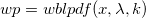
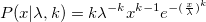

Wblpdf-func
 returns the probability density function of the Weibull distribution with parameters and k.

/math-c6a6eb61fd9c6c913da73b3642ca147d.png "\lambda") and k.
and k.
and k.
and k./math-9dd4e461268c8034f5c8564e155c67a6.png "x") (inptu, double)
(inptu, double)/math-d7b89f725185c1fd9984123cbaa89612.png "x\geq 0") (inptu,
double), of the required Weibull
distribution, must be positive( >0
).
(inptu,
double), of the required Weibull
distribution, must be positive( >0
)./math-8ce4b16b22b58894aa86c421e8759df3.png "k") (inptu, double)
(inptu, double)